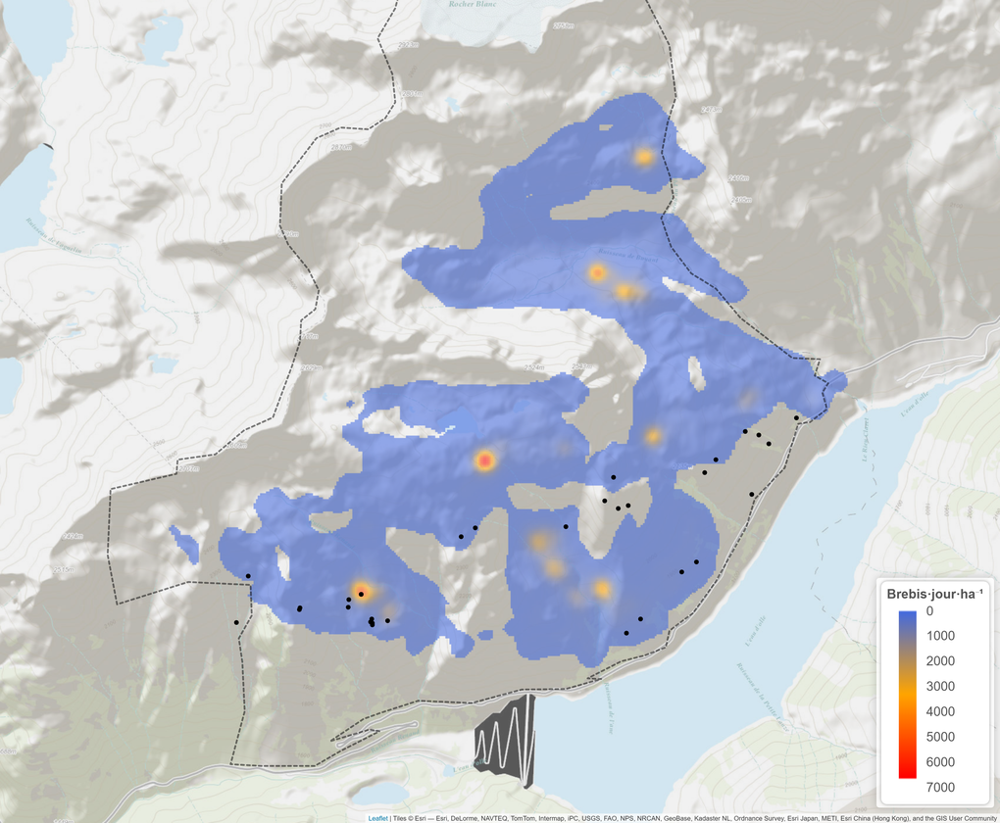
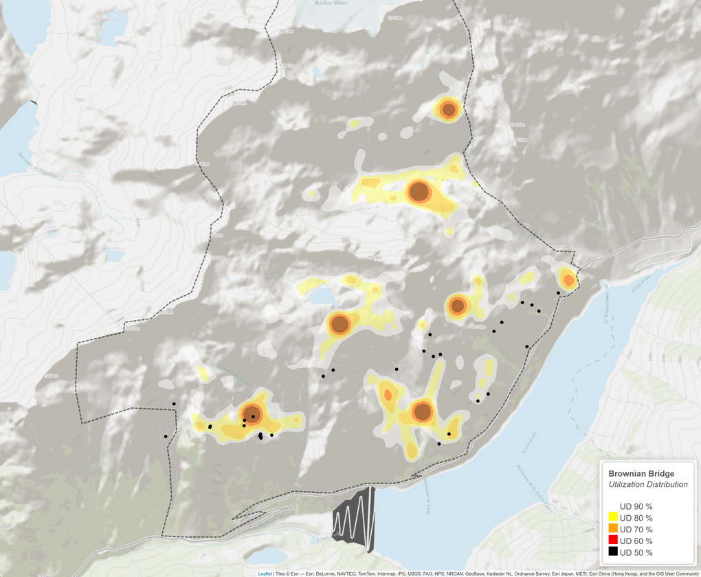
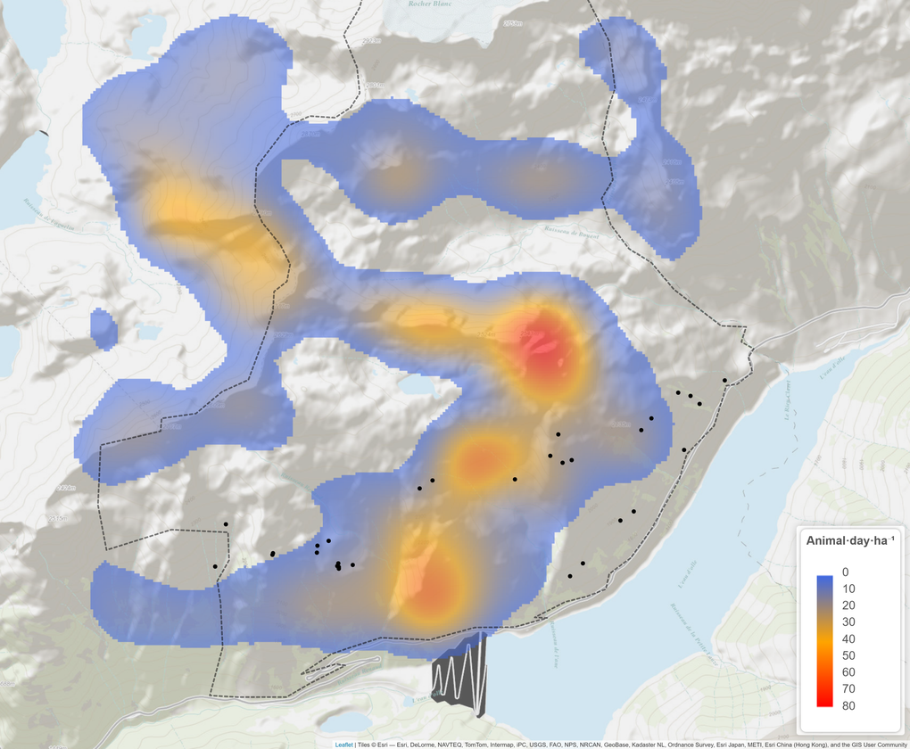
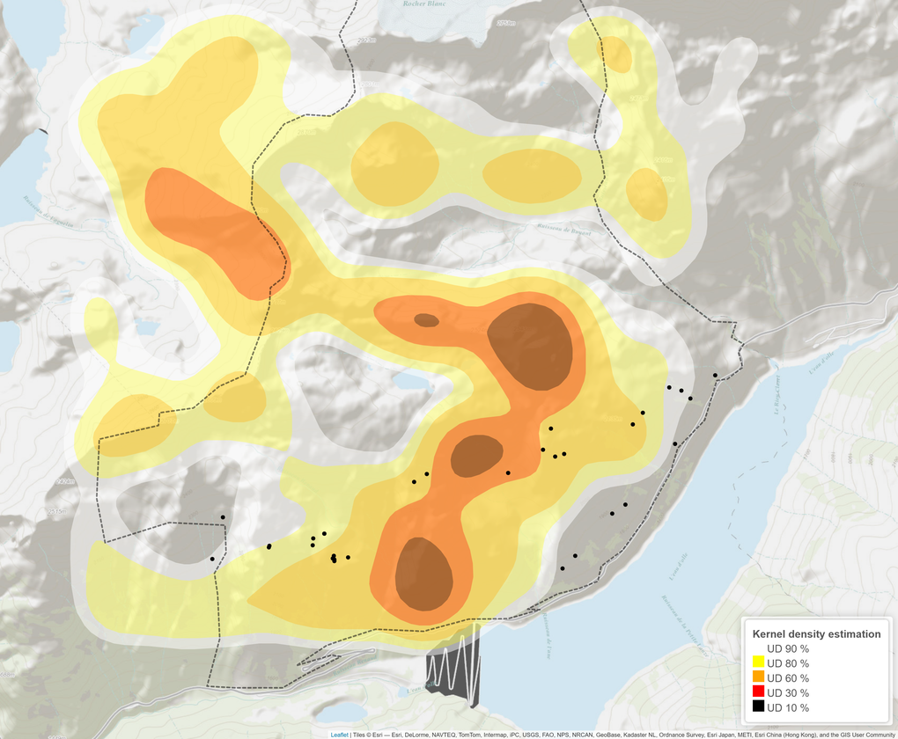

Make this Notebook Trusted to load map: File -> Trust Notebook
Carte des enregistreurs acoustiques posés en 2025
Durant l’été 2025, 32 enregistreurs de type audiomoth ont été posé dans la RNCFS de Belledonne. Leur emplacement est visible sur la carte ci-dessous. (point cliquable pour connaitre le nom de l’enregistreur)
Carte des enregistreurs acoustiques posés en 2025
Les enregistreurs ont été posés mi-juin 2025 avant l’arrivée du troupeau de brebis de l’âne. Deux maintenances ont été effectuées durant l’été et la récupération s’est faite début-octobre. Sur la figure 2, le début et la fin d’enregistrement de chaque audiomoth.
---
config:
logLevel: 'debug'
theme: 'neutral'
---
timeline
title Timeline des maintenances terrain
16 juin : Pose
21 juillet : Maintenance 1
19 août : Maintenance 2
2 octobre : Récupération
Figure 2 : Début et fin d’enregistrement de chaque Logger
La figure 3 nous montre les précipitations et la température relevés par la station météo de l’âne. Une courbe fine toutes les 10 minutes est disponible ainsi qu’une autre qui est une variation journalière.
Figure 3: Précipitation et température relevé par la station metéo de Belledonne
La figure 4 permet de voir les spectrogrammes long terme de chaque enregistreurs. un menu déroulant permet de choisir l’enregistreur désiré. Une photo de la map avec le nom de tous les enregistreurs est en fin de page @photo-map.
Figure 4 : Spectrogramme long terme de chaque logger
La figure figure 5 montre l’évolution du Leq (entre 8 et 42 kHz) - un menu déroulant permet de choisir parmis 3 périodes. La figure est mise en relation avec la météo. un zoom sur le Leq permet également le meme zoom sur la météo. Le choix des courbes visibles est dynamique; il suffit de cliquer deux fois sur un enregistreur pour n’afficher que sa courbe et passer tous les autres en invisible. On peut additionner ensuite autant de courbe qu’on le veut en cliquant sur les courbes que l’on souhaite ajouter.
Figure 5 : LEq disponible pour 3 périodes avec choix dynamique de ou des enregistreurs souhaités – Fenêtres temporelles & météo synchronisées
Une autre visualisation en heatmap est disponible sur la figure 6. Avec coloration en mauve pour insecte et en vert pour la pluie (pour le moment les données proviennent de la station météo)
Figure 6 : Heatmap avec bruit insecte en mauve et bruit de la pluie en vert

|  |  |
|  |  |
Toutes les localisations GPS des bouquetins sur le site de Belledonne, de 2017 à 2025, ont été utilisées, mais seules celles comprises entre juin et octobre ont été conservées. Les données ont été filtrées spatialement pour ne retenir que les points situés dans la zone d’étude. Pour éviter la surreprésentation temporelle, un sous-échantillonnage a été appliqué, ne conservant qu’une localisation toutes les deux heures par individu. Ces coordonnées ont ensuite servi au calcul de la densité d’utilisation de l’espace (Kernel Density Estimation, KDE) avec la fonction kernelUD du package adehabitatHR. Un KDE global, intégrant tous les individus, a été généré avec une largeur de bande automatique (href) et une grille de résolution adaptée, produisant une surface continue représentant l’intensité d’utilisation de l’espace par les bouquetins. Nous avons en sortie deux map chargement et iso pour toutes les années combinées que pour juin à octobre mais également ces deux mêmes map pour l’année entière. Et nous avons donc un chargemnt en animal.day autour des capteurs acoustiques (rayon de 50m) dans etude_2026/chargement_bouquetin_jour_global.csv. (code Calcul_KDE_bouquetin.Rmd)
Les données GPS des brebis ont été traitées afin de quantifier l’utilisation de l’espace et la présence des animaux autour des capteurs acoustiques.
Nettoyage des données : Les positions GPS situées hors de la zone d’étude ou présentant des erreurs de positionnement (dop > 5) ont été exclues. Les points impliquant des vitesses supérieures à 4 m/s ont également été retirés afin d’éliminer les anomalies liées au GPS.
Rééchantillonnage temporel : Les positions des colliers ont été rééchantillonnées à intervalles réguliers de 15 minutes. Pour chaque timestamp régulier, le point GPS le plus proche dans une fenêtre de ±5 minutes a été conservé et son temps ajusté au timestamp standard.
Calcul du barycentre quotidien : Pour chaque jour, la position moyenne du troupeau a été calculée à partir des colliers disponibles. Les coordonnées du barycentre (x_center, y_center) ainsi que l’écart-type des positions (x_sd, y_sd) ont été estimés, fournissant une mesure de la dispersion du troupeau. Les journées comportant moins de trois colliers ont été exclues pour garantir la fiabilité des estimations.
Trajectoires et rediscrétisation : La trajectoire quotidienne du barycentre a été représentée à l’aide d’objets ltraj du package adehabitatLT. Ces trajectoires ont ensuite été rediscrétisées à intervalles fixes de 15 minutes via la fonction redisltraj.
Quantification de l’espace utilisé (BBUD) : L’espace utilisé par le troupeau a été estimé à l’aide d’un Brownian Bridge Utilization Distribution (BBUD), calculé avec la fonction kernelbb du package adehabitatHR. Le paramètre sig1 a été estimé via la fonction liker et sig2 a été fixé à 25, correspondant à la précision GPS. Les résultats ont été convertis en raster représentant le nombre de brebis·jour par hectare, multiplié par l’effectif total du troupeau. Un seuil basé sur le 90ᵉ percentile a été appliqué pour éliminer les zones très peu utilisées.
Extraction autour des capteurs : Pour chaque année, le nombre de brebis·jour a été calculé dans un rayon de 50 m autour de chaque capteur acoustique (ici ceux de 2025) et enregistré dans le fichier chargement_brebis_jour_global_par_capteur_implementerwithyear.csv.
Présence instantanée autour des sites : La présence de brebis pour chaque intervalle de 15 minutes a été évaluée pour 2023 et 2025. Une matrice binaire a été construite indiquant, pour chaque site et chaque timestamp, si au moins une brebis se trouvait à moins de 50 m du capteur. La méthode repose sur l’estimation de la dispersion du troupeau à chaque instant. À partir du barycentre et des écarts-types en X et Y, un rayon de diffusion du troupeau est calculé (racine carrée de la somme des carrés des écarts-types), servant à définir la zone de couverture autour du barycentre.
Ce rayon de diffusion est ajouté à chaque point de trajectoire et des règles spécifiques sont appliquées pour les périodes nocturnes (19 h–4 h) et pour les valeurs manquantes : les points nocturnes se voient attribuer un rayon fixe, tandis que les autres valeurs manquantes sont complétées par la dernière valeur connue. Une matrice de distances est ensuite calculée entre tous les points et tous les sites, et la présence du troupeau est déterminée en comparant cette distance avec le rayon effectif du site (50 m + rayon de diffusion). Le résultat est une matrice binaire indiquant la présence ou l’absence du troupeau pour chaque intervalle de 15 minutes et chaque site. Les résultats sont enregistrés dans presence_parfichier15minutes_parcapteur_2025.csv et cumulés par jour dans presencecumule_parjouretsite_2025.csv.
Utilization Distribution journalier : Pour chaque journée, le BBUD a été calculé et les valeurs extraites pour chaque capteur. Les cartes quotidiennes ont été enregistrées au format PNG, et les résultats journaliers sont sauvegardés dans chargement_brebis_jour_par_jour_et_capteur_2025.csv.
Organisation du code : Le script propre pour 2025 est disponible dans propre_2025_Calcul_UD_centre_brebis2025.Rmd. Pour le cumul de toutes les années et la moyenne des rasters annuels, le code est dans domestique_all_year.Rmd, avec les résultats stockés par année dans chargement_brebis_jour_global_par_capteur_implementerwithyear.csv.
Déplacez le curseur pour visualiser le chargement annuel.
chargement :
|
iso_UD :
|
Déplacez le curseur pour visualiser le chargement journalier.
2025 :
|
2023 :
|
Presence des brebis sur site (2025)

Graphique de la présence de brebis sur un rayon de 50m autour des enregistreurs acoustiques.